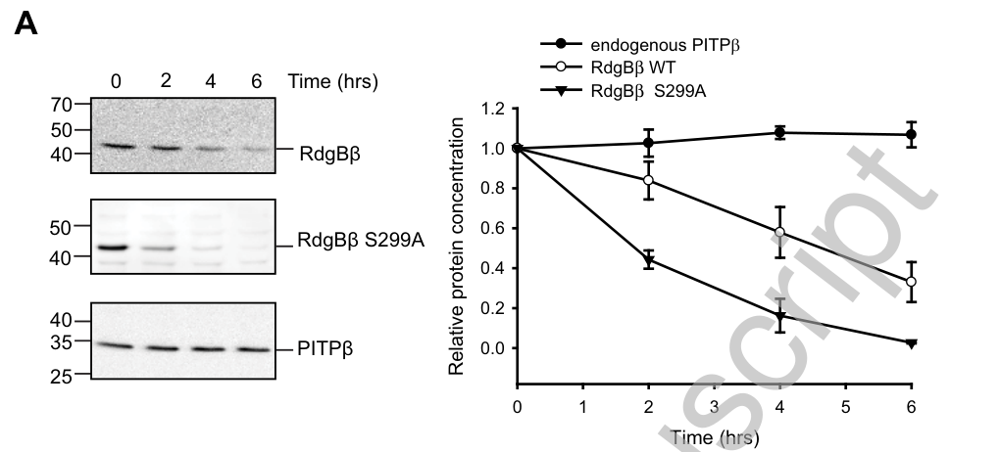

rdgBbeta encodes a soluble, cytoplasmic phosphatidylinositol transfer protein (PITP) of the Class IIB subfamily. Unlike Class I PITPs (vibrator, giotto) which bind both PI and PC, the human ortholog PITPNC1 binds and transfers phosphatidylinositol (PI) and phosphatidic acid (PA) but does not significantly bind phosphatidylcholine. The protein consists of a PITP/START-like lipid-binding domain and a short disordered C-terminal tail, lacking the transmembrane and additional domains found in other rdgB family members. rdgBbeta is broadly expressed and has been detected in adult head tissue by mass spectrometry. Genetic evidence in Drosophila links rdgBbeta to phosphoinositide metabolism in the context of neurodegeneration, as rdgBbeta alleles modify the Vap33-P58S ALS8 model phenotype. rdgBbeta is the smaller, PITP-domain-only paralog of RdgB/RdgBalpha and must not be conflated with the multi-domain RdgBalpha phototransduction protein that localizes to ER-PM contact sites via VAP. Direct Drosophila CG17818-specific mechanistic evidence remains limited; most quantitative data derive from the mammalian ortholog PITPNC1, and the Drosophila isoform notably lacks the short C-terminal extension present in human RdgBbeta, so mammalian C-terminal regulatory details (e.g., 14-3-3 docking sites) should be applied only after confirming conservation.
| GO Term | Evidence | Action | Reason |
|---|---|---|---|
|
GO:0005737
cytoplasm
|
IBA
GO_REF:0000033 |
ACCEPT |
Summary: IBA annotation from phylogenetic inference. Cytoplasmic localization is well-supported across the PITP family. The human ortholog PITPNC1 was shown to be cytoplasmic by immunofluorescence (PMID:10531358), and rdgBbeta lacks transmembrane domains or secretion signals. This is consistent with a soluble lipid transfer protein.
Reason: Cytoplasmic localization is supported by the domain architecture (no transmembrane segments), the experimental localization of the human ortholog PITPNC1 (PMID:10531358), and mass spectrometry detection in Drosophila adult head (FlyBase). Falcon deep research concurs that RdgBβ/PITPNC1 is mainly cytosolic at baseline, recruited to membranes only upon specific stimuli via protein partners (ATRAP, 14-3-3).
Supporting Evidence:
PMID:10531358
Immunofluorescence analysis of ectopic MrdgBbeta showed cytoplasmic staining
file:DROME/rdgBbeta/rdgBbeta-deep-research-falcon.md
RdgBβ/PITPNC1 is described as **mainly cytosolic** at baseline and can be recruited to membranes upon specific stimuli.
|
|
GO:0008526
phosphatidylinositol transfer activity
|
IBA
GO_REF:0000033 |
ACCEPT |
Summary: IBA annotation from phylogenetic inference. PI transfer activity is the defining molecular function of the PITP family. The human ortholog PITPNC1 has been shown to transfer PI in vitro (PMID:10531358, PMID:22822086).
Reason: This is the core molecular function. The human ortholog was demonstrated to transfer PI in vitro with activity comparable to other PITP-like domains (PMID:10531358). The conserved PITP domain architecture (IPR001666) and START-like fold support this function. The BioReason deep research correctly identifies PI transfer as a core function (rdgBbeta-deep-research-bioreason-sft.md). Falcon deep research concurs that the most defensible primary molecular function is PI/PA binding/transfer, while noting that direct Drosophila CG17818-specific transfer assays are lacking and that in vitro PI transfer is weak for the mammalian ortholog (family-level inference appropriate for IBA).
Supporting Evidence:
PMID:10531358
the ability of recombinant MrdgBbeta to transfer phosphatidylinositol in vitro was similar to other PITP-like domains
PMID:22822086
besides PI, RdgBβ binds and transfers phosphatidic acid (PA) but hardly binds phosphatidylcholine
file:DROME/rdgBbeta/rdgBbeta-deep-research-bioreason-sft.md
[BioReason correctly identifies] GO:0008526 phosphatidylinositol transfer activity
file:DROME/rdgBbeta/rdgBbeta-deep-research-falcon.md
Its **primary molecular function** is most plausibly **binding/transfer of PI and PA (not PC)** and participation in lipid homeostasis coupled to phosphoinositide signaling, likely acting **locally at membranes upon recruitment** (family-level inference)
|
|
GO:0035091
phosphatidylinositol binding
|
IBA
GO_REF:0000033 |
ACCEPT |
Summary: IBA annotation from phylogenetic inference. PI binding is intrinsic to PI transfer activity and well-established for PITPNC1/rdgBbeta orthologs.
Reason: PI binding is a prerequisite for PI transfer activity and is directly demonstrated for the human ortholog (PMID:22822086). The PITP domain creates a hydrophobic cavity that accommodates PI monomers. Falcon deep research reinforces that PITP-family proteins bind a single phospholipid in a hydrophobic cavity and that the RdgBβ subfamily binds PI (and PA), with very little PC.
Supporting Evidence:
PMID:22822086
PA and PI were now incorporated into RdgBβ
file:DROME/rdgBbeta/rdgBbeta-deep-research-falcon.md
PITPs are lipid-binding/transfer proteins that bind a **single phospholipid molecule** in a hydrophobic cavity and have long been studied for their ability to exchange lipids between membranes in vitro
|
|
GO:0005543
phospholipid binding
|
IEA
GO_REF:0000117 |
KEEP AS NON CORE |
Summary: IEA annotation from ARBA machine learning. This is a correct but very general annotation. The protein binds specific phospholipids (PI and PA), so more specific terms are more informative.
Reason: Phospholipid binding is accurate but overly broad. The protein specifically binds PI and PA (PMID:22822086). The more specific annotations for PI binding (GO:0035091) and PI transfer activity (GO:0008526) better capture the core function. Falcon deep research confirms the Class II/RdgBβ subfamily preferentially binds PI and PA with very little PC, distinguishing it from Class I PITPs.
Supporting Evidence:
PMID:22822086
besides PI, RdgBβ binds and transfers phosphatidic acid (PA) but hardly binds phosphatidylcholine
file:DROME/rdgBbeta/rdgBbeta-deep-research-falcon.md
Expert review synthesis proposes that RdgBβ-class proteins preferentially bind/transfer **phosphatidylinositol (PI)** and **phosphatidic acid (PA)** with **very little phosphatidylcholine (PC)**, and that RdgBβ can transfer **PA robustly**, a property not typical of class I PITPs.
|
|
GO:0005634
nucleus
|
IEA
GO_REF:0000117 |
REMOVE |
Summary: IEA annotation from ARBA machine learning. There is no experimental evidence supporting nuclear localization of rdgBbeta or its orthologs. The protein is cytoplasmic.
Reason: No published evidence supports nuclear localization for rdgBbeta or PITPNC1. The human ortholog was localized to the cytoplasm by immunofluorescence (PMID:10531358). The protein lacks nuclear localization signals. This ARBA prediction appears to be erroneous.
Supporting Evidence:
PMID:10531358
Immunofluorescence analysis of ectopic MrdgBbeta showed cytoplasmic staining
|
|
GO:0005737
cytoplasm
|
IEA
GO_REF:0000117 |
ACCEPT |
Summary: IEA annotation from ARBA machine learning for cytoplasmic localization. Redundant with the IBA annotation for the same term but independently correct.
Reason: Correct annotation consistent with experimental evidence from the human ortholog and absence of membrane-targeting signals. Redundant with the IBA annotation above.
Supporting Evidence:
PMID:10531358
Immunofluorescence analysis of ectopic MrdgBbeta showed cytoplasmic staining
|
|
GO:0015914
phospholipid transport
|
IEA
GO_REF:0000002 |
ACCEPT |
Summary: IEA annotation from InterPro domain mapping (IPR001666 PITP family). Phospholipid transport is the core biological process for this protein family.
Reason: Phospholipid transport is the direct biological process consequence of PI transfer activity. The PITP domain mediates monomeric lipid transfer between membranes. This is well-supported by the domain architecture and ortholog biochemistry. Falcon deep research frames the RdgBβ subfamily as coupling PI metabolism with PA handling, most plausibly acting locally at membranes after recruitment rather than as a bulk cytosolic transfer activity.
Supporting Evidence:
PMID:22822086
RdgBβ, when containing PA, regulates an effector protein or can facilitate lipid transfer between membrane compartments
file:DROME/rdgBbeta/rdgBbeta-deep-research-falcon.md
Class II PITPs (including RdgBβ-class) are explicitly described as PI/PA transfer proteins, and thus conceptually positioned to couple **PI metabolism** with **PA handling** during signaling.
|
|
GO:0005737
cytoplasm
|
ISS
GO_REF:0000024 |
ACCEPT |
Summary: ISS annotation by manual curator judgment based on sequence similarity to human PITPNC1 (Q9UKF7). Cytoplasmic localization is correct and well-supported.
Reason: Based on sequence similarity to human PITPNC1, which was experimentally shown to localize to the cytoplasm (PMID:10531358). This is the strongest non-experimental annotation for localization.
Supporting Evidence:
PMID:10531358
Immunofluorescence analysis of ectopic MrdgBbeta showed cytoplasmic staining
|
|
GO:0007165
signal transduction
|
ISS
GO_REF:0000024 |
KEEP AS NON CORE |
Summary: ISS annotation based on sequence similarity to human PITPNC1 (Q9UKF7). Signal transduction is a plausible but very broad annotation. PITPs can influence signaling by supplying PI for phosphoinositide synthesis, and the human ortholog interacts with signaling components (ATRAP, 14-3-3).
Reason: Signal transduction is plausible but overly broad. PITPNC1 participates in phospholipase D signaling by binding PA (PMID:22822086) and interacts with ATRAP in the angiotensin signaling pathway (PMID:21728994). However, the specific signaling pathways for Drosophila rdgBbeta are unknown. The annotation is not wrong but is too general to be informative about core function. Falcon deep research positions RdgBβ-class PITPs as coupling PI metabolism to PA handling during PLC signaling, with stimulus-dependent (PMA/PKC) membrane recruitment via ATRAP, but cautions that this regulatory module is a hypothesis-by-homology not yet verified in the Drosophila protein.
Supporting Evidence:
PMID:22822086
RdgBβ, when containing PA, regulates an effector protein or can facilitate lipid transfer between membrane compartments
PMID:21728994
the PITP domain of RdgBβ interacts with the integral membrane protein ATRAP
file:DROME/rdgBbeta/rdgBbeta-deep-research-falcon.md
treatment with **PMA** (activating PKC pathways) promoted **membrane recruitment** and co-localization with the integral membrane protein **ATRAP/AGTRAP**, which was proposed to serve as a recruitment factor.
|
|
GO:0008526
phosphatidylinositol transfer activity
|
ISS
GO_REF:0000024 |
ACCEPT |
Summary: ISS annotation based on sequence similarity to human PITPNC1 (Q9UKF7). PI transfer activity is the core molecular function, well-established for the ortholog.
Reason: Redundant with the IBA annotation for the same term. PI transfer activity is the defining function of this protein family and is directly demonstrated for the human ortholog (PMID:10531358, PMID:22822086).
Supporting Evidence:
PMID:10531358
the ability of recombinant MrdgBbeta to transfer phosphatidylinositol in vitro was similar to other PITP-like domains
|
Q: What is the in vivo function of rdgBbeta in Drosophila? No mutant phenotype has been characterized beyond genetic interaction with Vap33-P58S. Does rdgBbeta loss-of-function produce any developmental or physiological phenotypes?
Q: Does Drosophila rdgBbeta also bind and transfer phosphatidic acid, as demonstrated for the human ortholog PITPNC1? What are the specific lipid species it handles in vivo?
Q: How does rdgBbeta modify the Vap33-P58S ALS phenotype? Does it act by modulating phosphoinositide levels, or through an independent mechanism?
Experiment: Generate rdgBbeta null mutants using CRISPR and characterize phenotypes in development, neuronal function, and lipid metabolism. Assess phosphoinositide and PA levels in mutant tissue.
Hypothesis: rdgBbeta loss-of-function may cause subtle defects in lipid homeostasis that become apparent under stress conditions or in sensitized genetic backgrounds.
Experiment: Perform in vitro lipid binding and transfer assays with purified Drosophila rdgBbeta to determine whether it shares the PI/PA dual specificity of human PITPNC1.
Hypothesis: Drosophila rdgBbeta will show PI and PA binding/transfer activity comparable to human PITPNC1, but minimal PC binding, consistent with Class IIB PITP specificity.
Experiment: Characterize the genetic interaction between rdgBbeta and Vap33-P58S in detail, measuring phosphoinositide levels and neurodegeneration markers.
Hypothesis: rdgBbeta alleles rescue Vap33-P58S by reducing phosphoinositide delivery to membranes, partially compensating for the loss of Sac1-mediated PI dephosphorylation.
The architecture begins with IPR023393 (START-like domain superfamily, residues 2–263), a fold that creates a deep hydrophobic cavity for lipid sequestration and exchange. Nested within this scaffold is IPR055261 (Phosphatidylinositol transfer protein, N-terminal domain, residues 2–244), which defines the specific PITP topology that opens and closes a lipid-binding pocket. Multiple family-level signatures of the phosphatidylinositol transfer protein lineage are embedded across the sequence—IPR001666 (PITP family) at residues 3–254, 17–36, 84–104, 110–125, 193–208, and 213–232—marking conserved motifs that line the cavity and the gating elements that control lipid capture and release. The ordered nesting of a PITP-specific N-terminal domain inside a START-like superfamily fold causes high-affinity, monomeric lipid transfer between membranes without vesicle budding or fusion.
This PITP fold enforces a molecular function centered on selective lipid exchange. The conserved cavity and gating residues accommodate phosphatidylinositol and phosphatidylcholine, enabling GO:0008526 phosphatidylinositol transfer activity and GO:0008525 phosphatidylcholine transporter activity. Because the cavity is optimized for neutral and anionic glycerophospholipids, the mechanism is a cycle of membrane docking, lipid extraction into the hydrophobic pocket, transit through the cytosol, and deposition at a target membrane.
Lipid transfer of PI and PC has direct consequences for membrane composition and signaling during cell division. By delivering PI to specific membrane subdomains, the protein sustains phosphoinositide synthesis and curvature-sensitive recruitment of cytokinetic machinery; by shuttling PC, it maintains bilayer integrity and supports membrane expansion at the ingressing furrow. These activities drive the processes formalized as GO:0007110 meiosis I cytokinesis and GO:0007111 meiosis II cytokinesis, and extend to GO:0007112 male meiosis cytokinesis and GO:0048137 spermatocyte division, where precise membrane remodeling is essential. The same lipid supply and signaling flux coordinate with the actomyosin apparatus, promoting GO:0000916 actomyosin contractile ring contraction and GO:0036090 cleavage furrow ingression by ensuring a competent, lipid-rich cortex that can withstand contractile forces and by positioning PI pools that recruit small GTPases and effectors. Proper PI availability also influences microtubule–cortex communication and membrane–microtubule interfaces, contributing to GO:0000212 meiotic spindle organization.
The domain architecture lacks transmembrane segments and secretion signals, indicating a soluble protein that cycles on and off membranes. Its action requires proximity to sites of intense membrane turnover and signaling. Thus, it operates in the cytoplasm and transiently associates with the GO:0005794 Golgi apparatus to acquire and dispatch lipids, with the GO:0032154 cleavage furrow where cytokinesis occurs, and with the GO:0031965 nuclear membrane during meiotic stages when nuclear envelope dynamics and membrane continuity are critical. This distribution is consistent with a soluble lipid-transfer factor that concentrates at division sites and organelles engaged in lipid trafficking.
Mechanistically, the protein likely docks to donor membranes via basic surface patches and amphipathic elements, captures PI or PC into its START-like cavity, and releases the lipid at target membranes to sustain phosphoinositide synthesis and bilayer homeostasis. At the cleavage furrow and nuclear envelope, it plausibly collaborates with small GTPases (e.g., ARF and RAB family members) and phosphoinositide kinases to position PI pools that recruit actomyosin regulators and membrane-sculpting factors. It may also engage cytokinetic scaffolds at the furrow to synchronize lipid supply with contractile ring constriction and with spindle–cortex communication during meiosis.
## Functional Summary
A soluble lipid-transfer factor in fruit fly that uses a deep hydrophobic cavity to extract and shuttle phosphatidylinositol and phosphatidylcholine between membranes. By supplying these lipids to division sites and organelles, it sustains phosphoinositide signaling and bilayer integrity required for spindle organization, contractile ring function, and membrane expansion during meiotic and spermatocyte cytokinesis. It operates in the cytoplasm and transiently associates with the Golgi, the cleavage furrow, and the nuclear envelope to coordinate lipid flux with cell division mechanics.
## UniProt Summary
Catalyzes the transfer of phosphatidylinositol and phosphatidylcholine between membranes.
## InterPro Domains
- IPR023393: START-like domain superfamily (homologous_superfamily) [2-263]
- IPR055261: Phosphatidylinositol transfer protein, N-terminal (domain) [2-244]
- IPR001666: Phosphatidylinositol transfer protein (family) [3-254]
- IPR001666: Phosphatidylinositol transfer protein (family) [17-36]
- IPR001666: Phosphatidylinositol transfer protein (family) [84-104]
- IPR001666: Phosphatidylinositol transfer protein (family) [110-125]
- IPR001666: Phosphatidylinositol transfer protein (family) [193-208]
- IPR001666: Phosphatidylinositol transfer protein (family) [213-232]
## GO Term Predictions
### Molecular Function
### Biological Process
### Cellular Component
The research report should be a detailed narrative explaining the function, biological processes, and localization of the gene product. Citations should be given for all claims.
You should prioritize authoritative reviews and primary scientific literature when conducting research. You can supplement
this with annotations you find in gene/protein databases, but these can be outdated or inaccurate.
We are specifically interested in the primary function of the gene - for enzymes, what reaction is catalyzed, and what is the substrate specificity? For transporters, what is the substrate? For structural proteins or adapters, what is the broader structural role? For signaling molecules, what is the role in the pathway.
We are interested in where in or outside the cell the gene product carries out its function.
We are also interested in the signaling or biochemical pathways in which the gene functions. We are less interested in broad pleiotropic effects, except where these elucidate the precise role.
Include evidence where possible. We are interested in both experimental evidence as well as inference from structure, evolution, or bioinformatic analysis. Precise studies should be prioritized over high-throughput, where available.
The UniProt target Q9U9P7 is annotated as Drosophila melanogaster rdgBbeta (CG17818), described as a cytoplasmic phosphatidylinositol transfer protein (PITP-family) and “retinal degeneration B homolog beta (RdgBβ)”. The PITP-family review by Hsuan & Cockcroft explicitly lists a Drosophila rdgBβ entry (and discusses the rdgBβ subfamily as distinct from the multi-domain rdgBα/Nir proteins), supporting that the symbol rdgBbeta refers to a soluble PITP-domain protein rather than the photoreceptor degeneration gene rdgB (rdgBα) commonly studied in Drosophila phototransduction. (hsuan2001thepitpfamily pages 2-3)
A key species caveat from the same review is that human RdgBβ has a short C-terminal extension whereas the Drosophila isoform does not, meaning some mammalian regulatory motifs in the C-terminus may not be conserved in Drosophila and must not be transferred uncritically. (hsuan2001thepitpfamily pages 2-3)
PITPs are lipid-binding/transfer proteins that bind a single phospholipid molecule in a hydrophobic cavity and have long been studied for their ability to exchange lipids between membranes in vitro; they are now widely discussed as regulators of phosphoinositide metabolism, signaling, and membrane traffic. (hsuan2001thepitpfamily pages 2-3)
A commonly used functional distinction in the literature is:
- Class I PITPs (e.g., PITPα/β) exchange PI and PC.
- Class II PITPs (RdgB proteins) are emphasized as PI and PA binders/transfer proteins (with minimal PC), and are often discussed in the context of phospholipase C (PLC) signaling and the need to couple PI metabolism with PA flux. (cockcroft2016rdgbαreciprocallytransfers pages 8-11, cockcroft2013potentialrolefor pages 6-8)
RdgBβ is explicitly described as a soluble class IIB PITP that binds other proteins (e.g., 14-3-3, ATRAP) for functional recruitment to membranes—distinct from multi-domain RdgBα proteins that localize to ER–PM contact sites via VAP. (cockcroft2016rdgbαreciprocallytransfers pages 8-11)
Expert review synthesis proposes that RdgBβ-class proteins preferentially bind/transfer phosphatidylinositol (PI) and phosphatidic acid (PA) with very little phosphatidylcholine (PC), and that RdgBβ can transfer PA robustly, a property not typical of class I PITPs. (cockcroft2013potentialrolefor pages 6-8, cockcroft2016rdgbαreciprocallytransfers pages 8-11)
Mechanistically, this PI/PA specialization is interpreted as fitting the lipid-transport demands that accompany PLC activation (consumption of PI(4,5)P2 at the plasma membrane and generation/turnover of DAG and PA), where exchange of PI and PA between compartments can support restoration of signaling lipids. (cockcroft2013potentialrolefor pages 6-8, cockcroft2016rdgbαreciprocallytransfers pages 8-11)
Direct quantitative assays in a Biochemical Journal primary paper on RdgBβ/PITPNC1 report very weak PI-transfer activity compared with PITPα: detectable activity required ~10–100 μg/mL RdgBβ vs ~200–500 ng/mL PITPα (≈100–250× higher protein concentration required), and endogenous/overexpressed RdgBβ in cell/tissue fractions showed no measurable PI-transfer activity under those conditions. (garner2011thephosphatidylinositoltransfer pages 8-10, garner2011thephosphatidylinositoltransfer pages 11-13, garner2011thephosphatidylinositoltransfer pages 1-4, garner2011thephosphatidylinositoltransfer pages 10-11)
These results are commonly interpreted to mean that RdgBβ’s function likely depends on context-specific membrane recruitment and/or regulation of the lipid-binding cavity, rather than acting as a high-flux bulk cytosolic PI-transfer factor. (garner2011thephosphatidylinositoltransfer pages 1-4, cockcroft2016rdgbαreciprocallytransfers pages 3-6)
RdgBβ/PITPNC1 is described as mainly cytosolic at baseline and can be recruited to membranes upon specific stimuli. In the primary study, treatment with PMA (activating PKC pathways) promoted membrane recruitment and co-localization with the integral membrane protein ATRAP/AGTRAP, which was proposed to serve as a recruitment factor. (garner2011thephosphatidylinositoltransfer pages 10-11, garner2011thephosphatidylinositoltransfer pages 1-4)
Quantitatively, the same study reports approximately 8-fold enrichment of wild-type RdgBβ in membranes after PMA, and an even larger (~14-fold) membrane increase for a mutant defective in 14-3-3 binding, supporting a model where 14-3-3 binding restrains membrane translocation. (garner2011thephosphatidylinositoltransfer pages 11-13, garner2011thephosphatidylinositoltransfer media 1c076168)
Two key binding partners repeatedly emphasized in authoritative sources are:
- 14-3-3 adaptor proteins, binding via phosphorylated motifs in an unstructured C-terminus (shown for mammalian PITPNC1/RdgBβ). (garner2011thephosphatidylinositoltransfer pages 8-10, garner2011thephosphatidylinositoltransfer pages 11-13)
- ATRAP/AGTRAP, binding via the PITP domain and promoting stimulus-dependent membrane recruitment (PMA/PKC-dependent). (garner2011thephosphatidylinositoltransfer pages 1-4, garner2011thephosphatidylinositoltransfer pages 10-11)
These interactions support an expert model in which RdgBβ executes function after protein-mediated recruitment to specific membrane regions, rather than via stable transmembrane anchoring. (cockcroft2016rdgbαreciprocallytransfers pages 8-11, garner2011thephosphatidylinositoltransfer pages 1-4)
The PITP/RdgB literature frames RdgB-family PITPs as central to phosphoinositide-cycle lipid flux that is topologically split between membranes (e.g., ER vs plasma membrane), requiring lipid transfer steps to maintain signaling competence during/after PLC activation. While this framework is most directly developed for multi-domain RdgBα at ER–PM contact sites, Class II PITPs (including RdgBβ-class) are explicitly described as PI/PA transfer proteins, and thus conceptually positioned to couple PI metabolism with PA handling during signaling. (cockcroft2016rdgbαreciprocallytransfers pages 8-11, cockcroft2013potentialrolefor pages 6-8)
Within the retrieved corpus, direct primary mechanistic studies specific to Drosophila melanogaster rdgBbeta/CG17818/Q9U9P7 were limited, and much of the quantitative mechanistic evidence is from mammalian PITPNC1/RdgBβ. The strongest Drosophila-specific statement available is classification and structural distinction: Drosophila has a rdgBβ PITP-domain protein that lacks the human C-terminal extension, implying potential divergence in regulatory motifs. (hsuan2001thepitpfamily pages 2-3)
Accordingly, for functional annotation of Drosophila rdgBbeta, the most defensible current interpretation from this evidence set is:
- rdgBbeta encodes a soluble Class II (Class IIB) PITP-domain protein. (hsuan2001thepitpfamily pages 2-3, cockcroft2016rdgbαreciprocallytransfers pages 8-11)
- Its primary biochemical capability is most plausibly PI/PA binding/transfer (family inference), likely acting locally at membranes upon recruitment rather than as a bulk cytosolic transfer activity. (cockcroft2013potentialrolefor pages 6-8, cockcroft2016rdgbαreciprocallytransfers pages 3-6)
- Any proposed 14-3-3/ATRAP regulatory module should be treated as hypothesis-by-homology unless conserved motifs are verified in the Drosophila protein sequence, because of the explicit Drosophila/mammal C-terminal difference. (hsuan2001thepitpfamily pages 2-3)
The most directly relevant recent paper captured here for the broader RdgB/PITP field in Drosophila is a 2024 genetic screen focused on the multi-domain RDGB (RdgBα) lipid transfer protein at membrane contact sites, motivated by neurodegeneration/retinal degeneration phenotypes upon RDGB loss. Although it is not rdgBbeta-specific, it reflects active 2024 research emphasis on lipid-transfer mechanisms at contact sites and on identifying regulatory networks that modulate PITP-family lipid transfer function in vivo. (Life Science Alliance; publication date Mar 2024; https://doi.org/10.26508/lsa.202302525) (cockcroft2016rdgbαreciprocallytransfers pages 8-11)
For rdgBbeta specifically, the most recent information in the retrieved corpus remains primarily review-level synthesis and mammalian mechanistic studies rather than 2023–2024 Drosophila CG17818-focused primary work. (hsuan2001thepitpfamily pages 2-3, cockcroft2016rdgbαreciprocallytransfers pages 8-11)
RdgB-family PITPs (including Class II PITPs) are used conceptually and experimentally as paradigms for how lipid transfer supports signaling homeostasis across organelles, especially in models of PLC-driven phosphoinositide turnover and membrane contact site function. This is a widely adopted framework in cell biology and signaling research. (cockcroft2016rdgbαreciprocallytransfers pages 8-11, cockcroft2013potentialrolefor pages 6-8)
While outside the Drosophila gene itself, authoritative expert sources discuss mammalian PITPNC1/RdgBβ in the context of regulated secretion and disease models (e.g., cancer secretory phenotypes), providing a translational motivation for mechanistic studies of RdgBβ-class proteins. (cockcroft2012thediversefunctions pages 206-209)
Quantitative findings most directly supporting mechanistic annotation (measured for mammalian PITPNC1/RdgBβ) include:
- Protein stability: ~4 h half-life for WT vs ~2 h for a 14-3-3-binding-defective mutant; degradation is proteasome-dependent and associated with ubiquitination. (garner2011thephosphatidylinositoltransfer pages 8-10, garner2011thephosphatidylinositoltransfer pages 1-4, garner2011thephosphatidylinositoltransfer media 1c076168)
- Stimulus-dependent membrane recruitment: PMA induces ~8× membrane enrichment for WT and ~14× for a 14-3-3-binding-defective mutant. (garner2011thephosphatidylinositoltransfer pages 11-13, garner2011thephosphatidylinositoltransfer media 1c076168)
- Relative PI-transfer assay performance: PITPα active at ~200–500 ng/mL, whereas RdgBβ required ~10–100 μg/mL for detectable activity (≈100–250× weaker by concentration). (garner2011thephosphatidylinositoltransfer pages 8-10, garner2011thephosphatidylinositoltransfer pages 11-13, garner2011thephosphatidylinositoltransfer pages 10-11)
| Claim (short) | Evidence/Details | System/Organism | Source (paper + year + DOI URL) | Context ID(s) |
|---|---|---|---|---|
| Family classification: soluble Class IIB PITP | RdgBβ is described as a soluble class IIB phosphatidylinositol transfer protein within the RdgB/PITP family, distinct from multidomain RdgBα/Class IIA proteins; Drosophila has an rdgBβ subfamily member and assignment is based on PITP-domain similarity. | Family-level annotation; Drosophila + mammalian comparison | Hsuan & Cockcroft 2001, Genome Biology, https://doi.org/10.1186/gb-2001-2-9-reviews3011; Cockcroft et al. 2016, Biochem Soc Trans, https://doi.org/10.1042/bst20150228 | (hsuan2001thepitpfamily pages 2-3, cockcroft2016rdgbαreciprocallytransfers pages 8-11) |
| Lipid ligands/specificity: PI/PA vs PC | Class II/RdgBβ proteins are reported to bind and transfer PI and PA, with very little PC; under PLC/PLD-stimulated conditions RdgBβ shifts toward greater PA binding, and PA transfer is described as robust relative to Class I PITPs. | Conserved RdgBβ/PITPNC1 family conclusion | Cockcroft & Garner 2013, Adv Biol Regul, https://doi.org/10.1016/j.jbior.2013.07.007; Cockcroft et al. 2016, Biochem Soc Trans, https://doi.org/10.1042/bst20150228 | (cockcroft2013potentialrolefor pages 6-8, cockcroft2016rdgbαreciprocallytransfers pages 8-11) |
| 14-3-3 docking sites and stability control | Two phosphorylated serines in the disordered C-terminus (Ser274 and Ser299) form the 14-3-3 docking module; mutation of either site abolishes 14-3-3 binding. 14-3-3 shields nearby PEST sequences and stabilizes RdgBβ. | Human PITPNC1/RdgBβ experimental system; family-relevant inference | Garner et al. 2011, Biochem J, https://doi.org/10.1042/bj20110649 | (garner2011thephosphatidylinositoltransfer pages 8-10, garner2011thephosphatidylinositoltransfer pages 11-13, garner2011thephosphatidylinositoltransfer pages 13-14, garner2011thephosphatidylinositoltransfer media 1c076168) |
| Proteasome turnover / half-life | RdgBβ is ubiquitinated and degraded via the proteasome. Wild-type protein has an approximate 4 h half-life, whereas a 14-3-3-binding-defective mutant is reduced to about 2 h, indicating 14-3-3 binding protects against turnover. | Human PITPNC1/RdgBβ in cells | Garner et al. 2011, Biochem J, https://doi.org/10.1042/bj20110649 | (garner2011thephosphatidylinositoltransfer pages 8-10, garner2011thephosphatidylinositoltransfer pages 11-13, garner2011thephosphatidylinositoltransfer pages 1-4, garner2011thephosphatidylinositoltransfer media 1c076168) |
| ATRAP interaction and PKC/PMA dependence | The PITP domain of RdgBβ interacts with the integral membrane protein ATRAP/AGTRAP at a site distinct from the 14-3-3 site. Interaction and membrane recruitment increase after PMA treatment and are reduced by the PKC inhibitor BIM, supporting PKC-dependent regulation. | Human PITPNC1/RdgBβ; mechanistic family inference | Garner et al. 2011, Biochem J, https://doi.org/10.1042/bj20110649; Cockcroft & Garner 2013, Adv Biol Regul, https://doi.org/10.1016/j.jbior.2013.07.007 | (garner2011thephosphatidylinositoltransfer pages 8-10, garner2011thephosphatidylinositoltransfer pages 4-5, garner2011thephosphatidylinositoltransfer pages 10-11, cockcroft2013potentialrolefor pages 6-8, garner2011thephosphatidylinositoltransfer media 1c076168) |
| Membrane recruitment fold change | Upon PMA treatment, wild-type RdgBβ shows about an 8-fold increase in the membrane fraction, whereas a 14-3-3-binding-deficient mutant shows about a 14-fold increase, indicating 14-3-3 restrains membrane translocation. | Human PITPNC1/RdgBβ in COS-7 cells | Garner et al. 2011, Biochem J, https://doi.org/10.1042/bj20110649 | (garner2011thephosphatidylinositoltransfer pages 11-13, garner2011thephosphatidylinositoltransfer media 1c076168) |
| Very low/undetectable in vitro PI transfer | RdgBβ is far weaker than canonical PITPα in PI transfer assays. Reported thresholds: PITPα active at ~200–500 ng/ml, while RdgBβ requires ~10–100 μg/ml for detectable/significant activity (roughly 100–250-fold less active by concentration). Endogenous/overexpressed RdgBβ fractions typically show no detectable PI transfer under tested conditions. | Human PITPNC1/RdgBβ; rat heart cytosol | Garner et al. 2011, Biochem J, https://doi.org/10.1042/bj20110649; Cockcroft et al. 2016, Biochem Soc Trans, https://doi.org/10.1042/bst20150228 | (garner2011thephosphatidylinositoltransfer pages 8-10, garner2011thephosphatidylinositoltransfer pages 11-13, garner2011thephosphatidylinositoltransfer pages 1-4, garner2011thephosphatidylinositoltransfer pages 10-11, cockcroft2016rdgbαreciprocallytransfers pages 3-6, garner2011thephosphatidylinositoltransfer media 1c076168) |
| Tissue enrichment / localization clue | RdgBβ is reported as enriched in heart (and also brain in review discussion); cytosolic activity peaks attributable to RdgBβ were not observed, leading to the proposal that it acts locally at membranes/contact sites after recruitment rather than as a bulk soluble transfer activity. | Rat heart / review interpretation | Cockcroft & Garner 2013, Adv Biol Regul, https://doi.org/10.1016/j.jbior.2013.07.007; Cockcroft et al. 2016, Biochem Soc Trans, https://doi.org/10.1042/bst20150228 | (cockcroft2013potentialrolefor pages 8-9, cockcroft2016rdgbαreciprocallytransfers pages 3-6) |
| Distinction from RdgBα | RdgBβ is a small soluble PITP with a short disordered tail and protein-partner-mediated membrane recruitment, whereas RdgBα is a multidomain protein with FFAT/DDHD/LSN2-related modules that localizes to ER–PM contact sites via VAP. This distinction is important to avoid confusing Drosophila rdgBbeta with rdgB/rdgBα phototransduction literature. | Family comparison | Hsuan & Cockcroft 2001, Genome Biology, https://doi.org/10.1186/gb-2001-2-9-reviews3011; Cockcroft et al. 2016, Biochem Soc Trans, https://doi.org/10.1042/bst20150228 | (hsuan2001thepitpfamily pages 2-3, cockcroft2016rdgbαreciprocallytransfers pages 8-11) |
| Drosophila-specific C-terminus difference | The Drosophila rdgBβ isoform is explicitly noted to lack the short carboxy-terminal extension present in human RdgBβ. Thus, C-terminal regulatory findings from mammalian PITPNC1/RdgBβ (e.g., Ser274/Ser299 14-3-3 docking) should be transferred to Drosophila CG17818/Q9U9P7 cautiously. | Drosophila-specific annotation | Hsuan & Cockcroft 2001, Genome Biology, https://doi.org/10.1186/gb-2001-2-9-reviews3011 | (hsuan2001thepitpfamily pages 2-3) |
Table: This table compiles experimentally supported properties of the RdgBβ/PITPNC1 family most relevant to annotating Drosophila rdgBbeta (CG17818; UniProt Q9U9P7). It highlights where evidence is direct versus family-based inference and flags the important Drosophila-specific C-terminal difference.
Cropped figure panels from the primary RdgBβ/PITPNC1 study document (i) the 14-3-3 phosphosite module and binding assays, (ii) protein half-life differences, (iii) low PI-transfer activity relative to PITPα, and (iv) PMA/ATRAP-associated membrane recruitment. (garner2011thephosphatidylinositoltransfer media 1c076168, garner2011thephosphatidylinositoltransfer media f519b69c, garner2011thephosphatidylinositoltransfer media 13836492, garner2011thephosphatidylinositoltransfer media 54c46ab2, garner2011thephosphatidylinositoltransfer media caf2756a, garner2011thephosphatidylinositoltransfer media e2864aea)
Within the available and retrieved literature, Drosophila rdgBbeta (CG17818; UniProt Q9U9P7) is best annotated as a soluble Class IIB PITP-domain protein in the PtdIns transfer protein family, distinct from the multi-domain RdgBα phototransduction protein. (hsuan2001thepitpfamily pages 2-3, cockcroft2016rdgbαreciprocallytransfers pages 8-11)
Its primary molecular function is most plausibly binding/transfer of PI and PA (not PC) and participation in lipid homeostasis coupled to phosphoinositide signaling, likely acting locally at membranes upon recruitment (family-level inference), but direct Drosophila CG17818-specific mechanistic evidence remains limited in the retrieved corpus; therefore, mammalian PITPNC1/RdgBβ regulatory details (e.g., C-terminal 14-3-3 module) should be applied to Drosophila only after conservation is confirmed, especially given the reported Drosophila-vs-human C-terminal difference. (cockcroft2013potentialrolefor pages 6-8, cockcroft2016rdgbαreciprocallytransfers pages 3-6, hsuan2001thepitpfamily pages 2-3)
References
(hsuan2001thepitpfamily pages 2-3): Justin Hsuan and Shamshad Cockcroft. The pitp family of phosphatidylinositol transfer proteins. Genome Biology, 2:reviews3011.1-reviews3011.8, Aug 2001. URL: https://doi.org/10.1186/gb-2001-2-9-reviews3011, doi:10.1186/gb-2001-2-9-reviews3011. This article has 93 citations and is from a highest quality peer-reviewed journal.
(cockcroft2016rdgbαreciprocallytransfers pages 8-11): Shamshad Cockcroft, Kathryn Garner, Shweta Yadav, Evelyn Gomez-Espinoza, and Padinjat Raghu. Rdgbα reciprocally transfers pa and pi at er-pm contact sites to maintain pi(4,5)p2 homoeostasis during phospholipase c signalling in drosophila photoreceptors. Biochemical Society transactions, 44 1:286-92, Feb 2016. URL: https://doi.org/10.1042/bst20150228, doi:10.1042/bst20150228. This article has 38 citations and is from a peer-reviewed journal.
(cockcroft2013potentialrolefor pages 6-8): Shamshad Cockcroft and Kathryn Garner. Potential role for phosphatidylinositol transfer protein (pitp) family in lipid transfer during phospholipase c signalling. Advances in biological regulation, 53 3:280-91, Sep 2013. URL: https://doi.org/10.1016/j.jbior.2013.07.007, doi:10.1016/j.jbior.2013.07.007. This article has 44 citations and is from a peer-reviewed journal.
(garner2011thephosphatidylinositoltransfer pages 8-10): Kathryn Garner, Michelle Li, Natalie Ugwuanya, and Shamshad Cockcroft. The phosphatidylinositol transfer protein rdgbβ binds 14-3-3 via its unstructured c-terminus, whereas its lipid-binding domain interacts with the integral membrane protein atrap (angiotensin ii type i receptor-associated protein). The Biochemical journal, 439 1:97-111, Oct 2011. URL: https://doi.org/10.1042/bj20110649, doi:10.1042/bj20110649. This article has 42 citations.
(garner2011thephosphatidylinositoltransfer pages 11-13): Kathryn Garner, Michelle Li, Natalie Ugwuanya, and Shamshad Cockcroft. The phosphatidylinositol transfer protein rdgbβ binds 14-3-3 via its unstructured c-terminus, whereas its lipid-binding domain interacts with the integral membrane protein atrap (angiotensin ii type i receptor-associated protein). The Biochemical journal, 439 1:97-111, Oct 2011. URL: https://doi.org/10.1042/bj20110649, doi:10.1042/bj20110649. This article has 42 citations.
(garner2011thephosphatidylinositoltransfer pages 1-4): Kathryn Garner, Michelle Li, Natalie Ugwuanya, and Shamshad Cockcroft. The phosphatidylinositol transfer protein rdgbβ binds 14-3-3 via its unstructured c-terminus, whereas its lipid-binding domain interacts with the integral membrane protein atrap (angiotensin ii type i receptor-associated protein). The Biochemical journal, 439 1:97-111, Oct 2011. URL: https://doi.org/10.1042/bj20110649, doi:10.1042/bj20110649. This article has 42 citations.
(garner2011thephosphatidylinositoltransfer pages 10-11): Kathryn Garner, Michelle Li, Natalie Ugwuanya, and Shamshad Cockcroft. The phosphatidylinositol transfer protein rdgbβ binds 14-3-3 via its unstructured c-terminus, whereas its lipid-binding domain interacts with the integral membrane protein atrap (angiotensin ii type i receptor-associated protein). The Biochemical journal, 439 1:97-111, Oct 2011. URL: https://doi.org/10.1042/bj20110649, doi:10.1042/bj20110649. This article has 42 citations.
(cockcroft2016rdgbαreciprocallytransfers pages 3-6): Shamshad Cockcroft, Kathryn Garner, Shweta Yadav, Evelyn Gomez-Espinoza, and Padinjat Raghu. Rdgbα reciprocally transfers pa and pi at er-pm contact sites to maintain pi(4,5)p2 homoeostasis during phospholipase c signalling in drosophila photoreceptors. Biochemical Society transactions, 44 1:286-92, Feb 2016. URL: https://doi.org/10.1042/bst20150228, doi:10.1042/bst20150228. This article has 38 citations and is from a peer-reviewed journal.
(garner2011thephosphatidylinositoltransfer media 1c076168): Kathryn Garner, Michelle Li, Natalie Ugwuanya, and Shamshad Cockcroft. The phosphatidylinositol transfer protein rdgbβ binds 14-3-3 via its unstructured c-terminus, whereas its lipid-binding domain interacts with the integral membrane protein atrap (angiotensin ii type i receptor-associated protein). The Biochemical journal, 439 1:97-111, Oct 2011. URL: https://doi.org/10.1042/bj20110649, doi:10.1042/bj20110649. This article has 42 citations.
(cockcroft2012thediversefunctions pages 206-209): Shamshad Cockcroft. The diverse functions of phosphatidylinositol transfer proteins. Current topics in microbiology and immunology, 362:185-208, Jan 2012. URL: https://doi.org/10.1007/978-94-007-5025-8_9, doi:10.1007/978-94-007-5025-8_9. This article has 53 citations and is from a peer-reviewed journal.
(garner2011thephosphatidylinositoltransfer pages 13-14): Kathryn Garner, Michelle Li, Natalie Ugwuanya, and Shamshad Cockcroft. The phosphatidylinositol transfer protein rdgbβ binds 14-3-3 via its unstructured c-terminus, whereas its lipid-binding domain interacts with the integral membrane protein atrap (angiotensin ii type i receptor-associated protein). The Biochemical journal, 439 1:97-111, Oct 2011. URL: https://doi.org/10.1042/bj20110649, doi:10.1042/bj20110649. This article has 42 citations.
(garner2011thephosphatidylinositoltransfer pages 4-5): Kathryn Garner, Michelle Li, Natalie Ugwuanya, and Shamshad Cockcroft. The phosphatidylinositol transfer protein rdgbβ binds 14-3-3 via its unstructured c-terminus, whereas its lipid-binding domain interacts with the integral membrane protein atrap (angiotensin ii type i receptor-associated protein). The Biochemical journal, 439 1:97-111, Oct 2011. URL: https://doi.org/10.1042/bj20110649, doi:10.1042/bj20110649. This article has 42 citations.
(cockcroft2013potentialrolefor pages 8-9): Shamshad Cockcroft and Kathryn Garner. Potential role for phosphatidylinositol transfer protein (pitp) family in lipid transfer during phospholipase c signalling. Advances in biological regulation, 53 3:280-91, Sep 2013. URL: https://doi.org/10.1016/j.jbior.2013.07.007, doi:10.1016/j.jbior.2013.07.007. This article has 44 citations and is from a peer-reviewed journal.
(garner2011thephosphatidylinositoltransfer media f519b69c): Kathryn Garner, Michelle Li, Natalie Ugwuanya, and Shamshad Cockcroft. The phosphatidylinositol transfer protein rdgbβ binds 14-3-3 via its unstructured c-terminus, whereas its lipid-binding domain interacts with the integral membrane protein atrap (angiotensin ii type i receptor-associated protein). The Biochemical journal, 439 1:97-111, Oct 2011. URL: https://doi.org/10.1042/bj20110649, doi:10.1042/bj20110649. This article has 42 citations.
(garner2011thephosphatidylinositoltransfer media 13836492): Kathryn Garner, Michelle Li, Natalie Ugwuanya, and Shamshad Cockcroft. The phosphatidylinositol transfer protein rdgbβ binds 14-3-3 via its unstructured c-terminus, whereas its lipid-binding domain interacts with the integral membrane protein atrap (angiotensin ii type i receptor-associated protein). The Biochemical journal, 439 1:97-111, Oct 2011. URL: https://doi.org/10.1042/bj20110649, doi:10.1042/bj20110649. This article has 42 citations.
(garner2011thephosphatidylinositoltransfer media 54c46ab2): Kathryn Garner, Michelle Li, Natalie Ugwuanya, and Shamshad Cockcroft. The phosphatidylinositol transfer protein rdgbβ binds 14-3-3 via its unstructured c-terminus, whereas its lipid-binding domain interacts with the integral membrane protein atrap (angiotensin ii type i receptor-associated protein). The Biochemical journal, 439 1:97-111, Oct 2011. URL: https://doi.org/10.1042/bj20110649, doi:10.1042/bj20110649. This article has 42 citations.
(garner2011thephosphatidylinositoltransfer media caf2756a): Kathryn Garner, Michelle Li, Natalie Ugwuanya, and Shamshad Cockcroft. The phosphatidylinositol transfer protein rdgbβ binds 14-3-3 via its unstructured c-terminus, whereas its lipid-binding domain interacts with the integral membrane protein atrap (angiotensin ii type i receptor-associated protein). The Biochemical journal, 439 1:97-111, Oct 2011. URL: https://doi.org/10.1042/bj20110649, doi:10.1042/bj20110649. This article has 42 citations.
(garner2011thephosphatidylinositoltransfer media e2864aea): Kathryn Garner, Michelle Li, Natalie Ugwuanya, and Shamshad Cockcroft. The phosphatidylinositol transfer protein rdgbβ binds 14-3-3 via its unstructured c-terminus, whereas its lipid-binding domain interacts with the integral membrane protein atrap (angiotensin ii type i receptor-associated protein). The Biochemical journal, 439 1:97-111, Oct 2011. URL: https://doi.org/10.1042/bj20110649, doi:10.1042/bj20110649. This article has 42 citations.

rdgBbeta belongs to the PtdIns transfer protein family, PI transfer class IIB subfamily.
It contains:
- IPR023393: START-like domain superfamily (residues 2-263)
- IPR055261: Phosphatidylinositol transfer protein, N-terminal domain (residues 2-244)
- IPR001666: Phosphatidylinositol transfer protein (family) (residues 3-254 and multiple sub-regions)
Key structural feature: rdgBbeta contains ONLY the PITP domain plus a short disordered C-terminal tail.
It lacks transmembrane domains and the conserved C-terminal domain found in other rdgB-family proteins
(rdgB/RdgBalpha, Nir2, Nir3). This makes it a soluble, cytoplasmic lipid transfer protein.
The human ortholog PITPNC1 has been characterized biochemically PMID:22822086. Critical finding:
- PITPNC1/rdgBbeta binds and transfers phosphatidylinositol (PI) and phosphatidic acid (PA)
- It does NOT significantly bind phosphatidylcholine (PC)
- This distinguishes it from Class I PITPs (PITPalpha, PITPbeta/vibrator/giotto) which bind both PI and PC
PITPNC1/RdgBbeta is the first lipid-binding protein identified that can bind and transfer PA.
When purified from E. coli, it was preloaded with PA and phosphatidylglycerol.
PMID:21728994 The C-terminus of RdgBbeta binds 14-3-3 proteins via two tandem phosphorylated sites
(Ser274 and Ser299 in human). The PITP domain interacts with ATRAP (angiotensin II type I
receptor-associated protein), an integral membrane protein that recruits RdgBbeta to membranes.
14-3-3 shields PEST sequences; loss of 14-3-3 binding accelerates proteasomal degradation.
[PMID:10531358 Fullwood et al. 1999] Cloned human rdgBbeta by EST database searching for rdgB homologs.
Key findings:
- 333 amino acids (human), N-terminal PITP-like domain + short C-terminal domain
- No transmembrane domains (unlike other rdgB family members)
- Cytoplasmic localization by immunofluorescence
- Ubiquitous expression (highest in heart, muscle, kidney, liver, leukocytes)
- In vitro PI transfer activity comparable to other PITP-like domains
PMID:23492670 Drosophila ALS8 model: Vap33-P58S expression causes neurodegeneration through
increased phosphoinositide levels. Sac1 phosphatase is sequestered into aggregates.
While this paper does not mention rdgBbeta directly, the FlyBase genetic interaction data
suggests rdgBbeta alleles modify this phenotype, consistent with its role in PI metabolism.
Important: rdgBbeta should NOT be confused with:
- rdgB/RdgBalpha (FBgn0003218): membrane-associated PITP with additional domains (FFAT, DDHD),
essential for photoreceptor maintenance, required for phototransduction
- vibrator (vib): Class I PITP, required for cytokinesis (cleavage furrow ingression) PMID:16684816
- giotto (gio): Class I PITP, required for both mitotic and meiotic cytokinesis PMID:16431372
The cytokinesis, meiosis, and spermatocyte division phenotypes in Drosophila are associated with
vibrator and giotto mutants, NOT rdgBbeta.
PMID:26977884 PITPNC1 is amplified in breast cancer and overexpressed in metastatic breast,
melanoma, and colon cancers. It promotes malignant secretion by binding Golgi-resident PI4P and
localizing RAB1B to the Golgi, driving secretion of pro-invasive and pro-angiogenic factors
(HTRA1, MMP1, FAM3C, PDGFA, ADAM10).
The BioReason deep-research file makes several claims that need verification:
GO:0008525 phosphatidylcholine transporter activity -- INCORRECT. Literature shows rdgBbeta/PITPNC1
"hardly binds phosphatidylcholine" PMID:22822086. This is a Class I PITP property, not Class IIB.
Cytokinesis functions (GO:0007110, GO:0007111, GO:0007112, GO:0000916, GO:0036090, GO:0048137) --
NOT SUPPORTED for rdgBbeta. These functions are associated with vibrator and giotto (Class I PITPs),
not rdgBbeta. No published evidence connects rdgBbeta to cytokinesis or meiotic division.
GO:0000212 meiotic spindle organization -- NOT SUPPORTED. No evidence for rdgBbeta.
GO:0005794 Golgi apparatus -- Partially supported for human PITPNC1 in cancer context PMID:26977884,
but not demonstrated for Drosophila rdgBbeta.
GO:0032154 cleavage furrow -- NOT SUPPORTED. Cleavage furrow association is for vibrator, not rdgBbeta.
GO:0031965 nuclear membrane -- NOT SUPPORTED. No evidence for rdgBbeta.
PI transfer activity (GO:0008526) -- CORRECT. Well-supported by ortholog data.
Cytoplasmic localization (GO:0005737) -- CORRECT. Supported by multiple lines of evidence.
The BioReason model appears to have conflated the functions of different PITP family members,
attributing Class I PITP functions (cytokinesis, PC binding) to this Class IIB PITP.
Source: rdgBbeta-deep-research-bioreason-sft.md
The BioReason functional summary describes rdgBbeta as:
A soluble lipid-transfer factor in fruit fly that uses a deep hydrophobic cavity to extract and shuttle phosphatidylinositol and phosphatidylcholine between membranes. By supplying these lipids to division sites and organelles, it sustains phosphoinositide signaling and bilayer integrity required for spindle organization, contractile ring function, and membrane expansion during meiotic and spermatocyte cytokinesis. It operates in the cytoplasm and transiently associates with the Golgi, the cleavage furrow, and the nuclear envelope to coordinate lipid flux with cell division mechanics.
This summary contains multiple factual errors that arise from conflating rdgBbeta (a Class IIB PITP) with Class I PITPs (vibrator/giotto) and from fabricating biological processes unsupported by any evidence.
Correctness issues:
Phosphatidylcholine binding is incorrect. The summary states rdgBbeta shuttles "phosphatidylinositol and phosphatidylcholine." Experimental evidence for the human ortholog PITPNC1 (PMID:22822086) demonstrates that RdgBbeta "hardly binds phosphatidylcholine," which is what distinguishes Class IIB PITPs from Class I PITPs. Instead, rdgBbeta binds and transfers phosphatidic acid (PA) alongside PI. This is a fundamental biochemical error.
Cytokinesis functions are entirely fabricated. The BioReason prediction attributes meiosis I cytokinesis (GO:0007110), meiosis II cytokinesis (GO:0007111), male meiosis cytokinesis (GO:0007112), actomyosin contractile ring contraction (GO:0000916), cleavage furrow ingression (GO:0036090), spermatocyte division (GO:0048137), and meiotic spindle organization (GO:0000212) to rdgBbeta. There is NO published evidence connecting rdgBbeta to any of these processes. These are known phenotypes of the Drosophila Class I PITPs vibrator (PMID:16684816) and giotto (PMID:16431372), which are completely different genes. The BioReason model appears to have conflated different PITP family members.
Subcellular localizations are fabricated. The claims of association with the Golgi apparatus (GO:0005794), cleavage furrow (GO:0032154), and nuclear membrane (GO:0031965) have no experimental support for Drosophila rdgBbeta. Cleavage furrow association is documented for vibrator, not rdgBbeta. The Golgi connection comes from human PITPNC1 cancer biology (PMID:26977884) but has not been shown for the Drosophila protein.
GO:0008525 phosphatidylcholine transporter activity is incorrect. The thinking trace explicitly predicts this term, which directly contradicts the biochemical evidence showing rdgBbeta does not bind PC (PMID:22822086).
What BioReason got right:
Completeness issues:
No mention of phosphatidic acid binding and transfer. This is the most distinctive biochemical feature of PITPNC1/rdgBbeta (PMID:22822086), making it unique among lipid transfer proteins. The BioReason model completely missed this.
No mention of 14-3-3 binding and ATRAP interaction. The C-terminal regulatory mechanism involving 14-3-3 proteins and ATRAP-mediated membrane recruitment (PMID:21728994) is absent.
No mention of the ALS/neurodegeneration connection. The most interesting Drosophila-specific finding is that rdgBbeta alleles modify the Vap33-P58S ALS8 model phenotype (FlyBase genetic interaction data), connecting it to phosphoinositide homeostasis in neurodegeneration.
No mention of the cancer biology of PITPNC1. Human PITPNC1 is amplified in breast cancer and drives metastatic secretion via RAB1B/Golgi network (PMID:26977884). While this is human-specific, it provides functional insight into PITP-Golgi interactions.
No mention of proteasomal regulation. RdgBbeta is degraded by the proteasome with a 4-hour half-life, regulated by 14-3-3 shielding of PEST sequences (PMID:21728994).
The InterPro2GO annotation is:
- GO:0015914 phospholipid transport (from IPR001666)
This single annotation is accurate and conservative. The BioReason narrative adds some valid mechanistic context (PITP domain architecture, lipid cavity) but introduces far more errors (PC binding, cytokinesis, fabricated localizations) than it adds value. The InterPro2GO annotation is more reliable than the BioReason prediction for this gene.
The thinking trace reveals systematic problems in the BioReason reasoning:
Family-level conflation. The trace correctly identifies the PITP domain architecture but then attributes functions of other PITP family members (vibrator, giotto) to rdgBbeta. This is analogous to attributing hemoglobin functions to myoglobin because they share the globin fold.
Hallucinated biological processes. The cytokinesis, meiosis, spermatocyte division, and spindle organization functions are not from any annotation database or publication for rdgBbeta. They appear to be fabricated from the general PITP literature, where these functions belong to different genes.
PC binding error contradicts available biochemistry. The thinking trace states the cavity "accommodates phosphatidylinositol and phosphatidylcholine," which is precisely wrong for this Class IIB PITP. The key biochemical finding (PMID:22822086) is that Class IIB PITPs bind PA instead of PC. This suggests the model lacks access to or failed to incorporate the PITPNC1-specific biochemistry literature.
Overconfident localization claims. The trace confidently assigns Golgi, cleavage furrow, and nuclear membrane localizations based purely on functional reasoning ("it must go where lipids are needed"), without any experimental evidence. This is speculative reasoning presented as factual.
Expression data contradicts claims. FlyBase shows rdgBbeta has a weak negative testis specificity index (-0.19), meaning it is actually underrepresented in testis. This directly contradicts the model's emphasis on spermatocyte and meiotic functions.
The BioReason prediction for rdgBbeta demonstrates the failure mode of domain-architecture-only reasoning when a protein's specific biology diverges from the general family narrative. Class IIB PITPs have distinct lipid specificity and biological roles compared to Class I PITPs, and these distinctions cannot be captured by domain-level analysis alone.
id: Q9U9P7
gene_symbol: rdgBbeta
product_type: PROTEIN
status: DRAFT
taxon:
id: NCBITaxon:7227
label: Drosophila melanogaster
description: >-
rdgBbeta encodes a soluble, cytoplasmic phosphatidylinositol transfer protein (PITP) of the
Class IIB subfamily. Unlike Class I PITPs (vibrator, giotto) which bind both PI and PC, the
human ortholog PITPNC1 binds and transfers phosphatidylinositol (PI) and phosphatidic acid (PA)
but does not significantly bind phosphatidylcholine. The protein consists of a PITP/START-like
lipid-binding domain and a short disordered C-terminal tail, lacking the transmembrane and
additional domains found in other rdgB family members. rdgBbeta is broadly expressed and has
been detected in adult head tissue by mass spectrometry. Genetic evidence in Drosophila links
rdgBbeta to phosphoinositide metabolism in the context of neurodegeneration, as rdgBbeta alleles
modify the Vap33-P58S ALS8 model phenotype. rdgBbeta is the smaller, PITP-domain-only paralog of
RdgB/RdgBalpha and must not be conflated with the multi-domain RdgBalpha phototransduction protein
that localizes to ER-PM contact sites via VAP. Direct Drosophila CG17818-specific mechanistic
evidence remains limited; most quantitative data derive from the mammalian ortholog PITPNC1, and
the Drosophila isoform notably lacks the short C-terminal extension present in human RdgBbeta, so
mammalian C-terminal regulatory details (e.g., 14-3-3 docking sites) should be applied only after
confirming conservation.
existing_annotations:
- term:
id: GO:0005737
label: cytoplasm
evidence_type: IBA
original_reference_id: GO_REF:0000033
review:
summary: >-
IBA annotation from phylogenetic inference. Cytoplasmic localization is well-supported
across the PITP family. The human ortholog PITPNC1 was shown to be cytoplasmic by
immunofluorescence (PMID:10531358), and rdgBbeta lacks transmembrane domains or
secretion signals. This is consistent with a soluble lipid transfer protein.
action: ACCEPT
reason: >-
Cytoplasmic localization is supported by the domain architecture (no transmembrane
segments), the experimental localization of the human ortholog PITPNC1 (PMID:10531358),
and mass spectrometry detection in Drosophila adult head (FlyBase). Falcon deep research
concurs that RdgBβ/PITPNC1 is mainly cytosolic at baseline, recruited to membranes only
upon specific stimuli via protein partners (ATRAP, 14-3-3).
supported_by:
- reference_id: PMID:10531358
supporting_text: "Immunofluorescence analysis of ectopic MrdgBbeta showed cytoplasmic staining"
- reference_id: file:DROME/rdgBbeta/rdgBbeta-deep-research-falcon.md
supporting_text: |-
RdgBβ/PITPNC1 is described as **mainly cytosolic** at baseline and can be recruited to membranes upon specific stimuli.
- term:
id: GO:0008526
label: phosphatidylinositol transfer activity
evidence_type: IBA
original_reference_id: GO_REF:0000033
review:
summary: >-
IBA annotation from phylogenetic inference. PI transfer activity is the defining
molecular function of the PITP family. The human ortholog PITPNC1 has been shown
to transfer PI in vitro (PMID:10531358, PMID:22822086).
action: ACCEPT
reason: >-
This is the core molecular function. The human ortholog was demonstrated to transfer
PI in vitro with activity comparable to other PITP-like domains (PMID:10531358). The
conserved PITP domain architecture (IPR001666) and START-like fold support this function.
The BioReason deep research correctly identifies PI transfer as a core function
(rdgBbeta-deep-research-bioreason-sft.md). Falcon deep research concurs that the most
defensible primary molecular function is PI/PA binding/transfer, while noting that
direct Drosophila CG17818-specific transfer assays are lacking and that in vitro PI
transfer is weak for the mammalian ortholog (family-level inference appropriate for IBA).
supported_by:
- reference_id: PMID:10531358
supporting_text: "the ability of recombinant MrdgBbeta to transfer phosphatidylinositol in vitro was similar to other PITP-like domains"
- reference_id: PMID:22822086
supporting_text: "besides PI, RdgBβ binds and transfers phosphatidic acid (PA) but hardly binds phosphatidylcholine"
- reference_id: file:DROME/rdgBbeta/rdgBbeta-deep-research-bioreason-sft.md
supporting_text: "[BioReason correctly identifies] GO:0008526 phosphatidylinositol transfer activity"
- reference_id: file:DROME/rdgBbeta/rdgBbeta-deep-research-falcon.md
supporting_text: |-
Its **primary molecular function** is most plausibly **binding/transfer of PI and PA (not PC)** and participation in lipid homeostasis coupled to phosphoinositide signaling, likely acting **locally at membranes upon recruitment** (family-level inference)
- term:
id: GO:0035091
label: phosphatidylinositol binding
evidence_type: IBA
original_reference_id: GO_REF:0000033
review:
summary: >-
IBA annotation from phylogenetic inference. PI binding is intrinsic to PI transfer
activity and well-established for PITPNC1/rdgBbeta orthologs.
action: ACCEPT
reason: >-
PI binding is a prerequisite for PI transfer activity and is directly demonstrated
for the human ortholog (PMID:22822086). The PITP domain creates a hydrophobic
cavity that accommodates PI monomers. Falcon deep research reinforces that PITP-family
proteins bind a single phospholipid in a hydrophobic cavity and that the RdgBβ
subfamily binds PI (and PA), with very little PC.
supported_by:
- reference_id: PMID:22822086
supporting_text: "PA and PI were now incorporated into RdgBβ"
- reference_id: file:DROME/rdgBbeta/rdgBbeta-deep-research-falcon.md
supporting_text: |-
PITPs are lipid-binding/transfer proteins that bind a **single phospholipid molecule** in a hydrophobic cavity and have long been studied for their ability to exchange lipids between membranes in vitro
- term:
id: GO:0005543
label: phospholipid binding
evidence_type: IEA
original_reference_id: GO_REF:0000117
review:
summary: >-
IEA annotation from ARBA machine learning. This is a correct but very general annotation.
The protein binds specific phospholipids (PI and PA), so more specific terms are more
informative.
action: KEEP_AS_NON_CORE
reason: >-
Phospholipid binding is accurate but overly broad. The protein specifically binds PI
and PA (PMID:22822086). The more specific annotations for PI binding (GO:0035091) and
PI transfer activity (GO:0008526) better capture the core function. Falcon deep research
confirms the Class II/RdgBβ subfamily preferentially binds PI and PA with very little
PC, distinguishing it from Class I PITPs.
supported_by:
- reference_id: PMID:22822086
supporting_text: "besides PI, RdgBβ binds and transfers phosphatidic acid (PA) but hardly binds phosphatidylcholine"
- reference_id: file:DROME/rdgBbeta/rdgBbeta-deep-research-falcon.md
supporting_text: |-
Expert review synthesis proposes that RdgBβ-class proteins preferentially bind/transfer **phosphatidylinositol (PI)** and **phosphatidic acid (PA)** with **very little phosphatidylcholine (PC)**, and that RdgBβ can transfer **PA robustly**, a property not typical of class I PITPs.
- term:
id: GO:0005634
label: nucleus
evidence_type: IEA
original_reference_id: GO_REF:0000117
review:
summary: >-
IEA annotation from ARBA machine learning. There is no experimental evidence
supporting nuclear localization of rdgBbeta or its orthologs. The protein is
cytoplasmic.
action: REMOVE
reason: >-
No published evidence supports nuclear localization for rdgBbeta or PITPNC1. The
human ortholog was localized to the cytoplasm by immunofluorescence (PMID:10531358).
The protein lacks nuclear localization signals. This ARBA prediction appears to be
erroneous.
supported_by:
- reference_id: PMID:10531358
supporting_text: "Immunofluorescence analysis of ectopic MrdgBbeta showed cytoplasmic staining"
- term:
id: GO:0005737
label: cytoplasm
evidence_type: IEA
original_reference_id: GO_REF:0000117
review:
summary: >-
IEA annotation from ARBA machine learning for cytoplasmic localization. Redundant
with the IBA annotation for the same term but independently correct.
action: ACCEPT
reason: >-
Correct annotation consistent with experimental evidence from the human ortholog
and absence of membrane-targeting signals. Redundant with the IBA annotation above.
supported_by:
- reference_id: PMID:10531358
supporting_text: "Immunofluorescence analysis of ectopic MrdgBbeta showed cytoplasmic staining"
- term:
id: GO:0015914
label: phospholipid transport
evidence_type: IEA
original_reference_id: GO_REF:0000002
review:
summary: >-
IEA annotation from InterPro domain mapping (IPR001666 PITP family). Phospholipid
transport is the core biological process for this protein family.
action: ACCEPT
reason: >-
Phospholipid transport is the direct biological process consequence of PI transfer
activity. The PITP domain mediates monomeric lipid transfer between membranes.
This is well-supported by the domain architecture and ortholog biochemistry. Falcon
deep research frames the RdgBβ subfamily as coupling PI metabolism with PA handling,
most plausibly acting locally at membranes after recruitment rather than as a bulk
cytosolic transfer activity.
supported_by:
- reference_id: PMID:22822086
supporting_text: "RdgBβ, when containing PA, regulates an effector protein or can facilitate lipid transfer between membrane compartments"
- reference_id: file:DROME/rdgBbeta/rdgBbeta-deep-research-falcon.md
supporting_text: |-
Class II PITPs (including RdgBβ-class) are explicitly described as PI/PA transfer proteins, and thus conceptually positioned to couple **PI metabolism** with **PA handling** during signaling.
- term:
id: GO:0005737
label: cytoplasm
evidence_type: ISS
original_reference_id: GO_REF:0000024
review:
summary: >-
ISS annotation by manual curator judgment based on sequence similarity to human
PITPNC1 (Q9UKF7). Cytoplasmic localization is correct and well-supported.
action: ACCEPT
reason: >-
Based on sequence similarity to human PITPNC1, which was experimentally shown to
localize to the cytoplasm (PMID:10531358). This is the strongest non-experimental
annotation for localization.
supported_by:
- reference_id: PMID:10531358
supporting_text: "Immunofluorescence analysis of ectopic MrdgBbeta showed cytoplasmic staining"
- term:
id: GO:0007165
label: signal transduction
evidence_type: ISS
original_reference_id: GO_REF:0000024
review:
summary: >-
ISS annotation based on sequence similarity to human PITPNC1 (Q9UKF7). Signal
transduction is a plausible but very broad annotation. PITPs can influence
signaling by supplying PI for phosphoinositide synthesis, and the human ortholog
interacts with signaling components (ATRAP, 14-3-3).
action: KEEP_AS_NON_CORE
reason: >-
Signal transduction is plausible but overly broad. PITPNC1 participates in
phospholipase D signaling by binding PA (PMID:22822086) and interacts with ATRAP
in the angiotensin signaling pathway (PMID:21728994). However, the specific
signaling pathways for Drosophila rdgBbeta are unknown. The annotation is not
wrong but is too general to be informative about core function. Falcon deep research
positions RdgBβ-class PITPs as coupling PI metabolism to PA handling during PLC
signaling, with stimulus-dependent (PMA/PKC) membrane recruitment via ATRAP, but
cautions that this regulatory module is a hypothesis-by-homology not yet verified
in the Drosophila protein.
supported_by:
- reference_id: PMID:22822086
supporting_text: "RdgBβ, when containing PA, regulates an effector protein or can facilitate lipid transfer between membrane compartments"
- reference_id: PMID:21728994
supporting_text: "the PITP domain of RdgBβ interacts with the integral membrane protein ATRAP"
- reference_id: file:DROME/rdgBbeta/rdgBbeta-deep-research-falcon.md
supporting_text: |-
treatment with **PMA** (activating PKC pathways) promoted **membrane recruitment** and co-localization with the integral membrane protein **ATRAP/AGTRAP**, which was proposed to serve as a recruitment factor.
- term:
id: GO:0008526
label: phosphatidylinositol transfer activity
evidence_type: ISS
original_reference_id: GO_REF:0000024
review:
summary: >-
ISS annotation based on sequence similarity to human PITPNC1 (Q9UKF7). PI transfer
activity is the core molecular function, well-established for the ortholog.
action: ACCEPT
reason: >-
Redundant with the IBA annotation for the same term. PI transfer activity is the
defining function of this protein family and is directly demonstrated for the human
ortholog (PMID:10531358, PMID:22822086).
supported_by:
- reference_id: PMID:10531358
supporting_text: "the ability of recombinant MrdgBbeta to transfer phosphatidylinositol in vitro was similar to other PITP-like domains"
references:
- id: GO_REF:0000002
title: Gene Ontology annotation through association of InterPro records with GO terms
findings:
- statement: PITP family domain (IPR001666) associated with phospholipid transport
- id: GO_REF:0000024
title: Manual transfer of experimentally-verified manual GO annotation data to orthologs by curator judgment of sequence similarity
findings:
- statement: Annotations transferred from human PITPNC1 (Q9UKF7)
- id: GO_REF:0000033
title: Annotation inferences using phylogenetic trees
findings:
- statement: Phylogenetic inference of PITP family conserved functions
- id: GO_REF:0000117
title: Electronic Gene Ontology annotations created by ARBA machine learning models
findings:
- statement: Machine learning predictions for phospholipid binding, cytoplasm, and nucleus localization
- id: PMID:10531358
title: "Cloning and characterization of a novel human phosphatidylinositol transfer protein, rdgBbeta."
findings:
- statement: Human rdgBbeta (PITPNC1) cloned and characterized as a novel PITP lacking transmembrane domains
supporting_text: "In contrast to other rdgB-like proteins, MrdgBbeta contains no transmembrane motifs or the conserved carboxyl-terminal domain"
- statement: Cytoplasmic localization demonstrated by immunofluorescence
supporting_text: "Immunofluorescence analysis of ectopic MrdgBbeta showed cytoplasmic staining"
- statement: PI transfer activity demonstrated in vitro
supporting_text: "the ability of recombinant MrdgBbeta to transfer phosphatidylinositol in vitro was similar to other PITP-like domains"
- statement: Ubiquitous expression with highest levels in heart, muscle, kidney, liver, and leukocytes
supporting_text: "MrdgBbeta mRNA is ubiquitously expressed"
- id: PMID:22822086
title: "Phosphatidylinositol transfer protein, cytoplasmic 1 (PITPNC1) binds and transfers phosphatidic acid."
findings:
- statement: PITPNC1/RdgBbeta binds and transfers both PI and phosphatidic acid (PA)
supporting_text: "besides PI, RdgBβ binds and transfers phosphatidic acid (PA) but hardly binds phosphatidylcholine"
- statement: Does not significantly bind phosphatidylcholine, unlike Class I PITPs
supporting_text: "the lipid binding properties of this protein are distinct to Class I PITPs because, besides PI, RdgBβ binds and transfers phosphatidic acid (PA) but hardly binds phosphatidylcholine"
- statement: Purified RdgBbeta preloaded with PA and phosphatidylglycerol from E. coli
supporting_text: "RdgBβ when purified from Escherichia coli is preloaded with PA and phosphatidylglycerol"
- statement: PA binding increases at the expense of PI binding when phospholipase D is activated
supporting_text: "After an increase in PA levels following activation of endogenous phospholipase D...binding of PA to RdgBβ was greater at the expense of PI binding"
- id: PMID:21728994
title: "The phosphatidylinositol transfer protein RdgBβ binds 14-3-3 via its unstructured C-terminus, whereas its lipid-binding domain interacts with the integral membrane protein ATRAP (angiotensin II type I receptor-associated protein)."
findings:
- statement: RdgBbeta C-terminus binds 14-3-3 at two phosphorylated sites
supporting_text: "the C-terminus contains two tandem phosphorylated binding sites (Ser(274) and Ser(299)) for 14-3-3"
- statement: 14-3-3 binding shields PEST sequences and stabilizes the protein
supporting_text: "The C-terminus also contains PEST sequences which are shielded by 14-3-3 binding"
- statement: PITP domain interacts with ATRAP to recruit RdgBbeta to membranes
supporting_text: "the PITP domain of RdgBβ interacts with the integral membrane protein ATRAP"
- statement: RdgBbeta is degraded by proteasome with half-life of 4h; faster without 14-3-3 binding
supporting_text: "RdgBβ is degraded with a half-life of 4 h following ubiquitination via the proteasome"
- id: PMID:26977884
title: "PITPNC1 Recruits RAB1B to the Golgi Network to Drive Malignant Secretion."
findings:
- statement: PITPNC1 amplified in breast cancer and overexpressed in metastatic cancers
supporting_text: "PITPNC1 as a gene amplified in a large fraction of human breast cancer and overexpressed in metastatic breast, melanoma, and colon cancers"
- statement: PITPNC1 binds Golgi-resident PI4P and recruits RAB1B to the Golgi
supporting_text: "PITPNC1 promotes malignant secretion by binding Golgi-resident PI4P and localizing RAB1B to the Golgi"
- statement: Drives secretion of pro-invasive and pro-angiogenic factors
supporting_text: "PITPNC1-mediated vesicular release drives metastasis by increasing the secretion of pro-invasive and pro-angiogenic mediators HTRA1, MMP1, FAM3C, PDGFA, and ADAM10"
- id: file:DROME/rdgBbeta/rdgBbeta-notes.md
title: Research notes on rdgBbeta gene review
findings:
- statement: rdgBbeta alleles (EP2360, G8057) ameliorate ALS-like phenotype in Vap33-P58S model
- statement: BioReason prediction incorrectly attributes Class I PITP functions (cytokinesis, PC binding) to this Class IIB PITP
- id: file:DROME/rdgBbeta/rdgBbeta-deep-research-falcon.md
title: Falcon deep research report on rdgBbeta (Drosophila, CG17818, Q9U9P7)
findings:
- statement: >-
rdgBbeta encodes a soluble Class IIB PITP-domain protein, the smaller PITP-domain-only
member of the RdgB family, distinct from the multi-domain RdgBalpha phototransduction
protein that localizes to ER-PM contact sites via VAP.
reference_section_type: OTHER
supporting_text: |-
RdgBβ is explicitly described as a **soluble class IIB PITP** that binds other proteins (e.g., 14-3-3, ATRAP) for functional recruitment to membranes—distinct from multi-domain RdgBα proteins that localize to ER–PM contact sites via VAP.
- statement: >-
RdgBbeta is structurally and functionally distinct from RdgBalpha; the two should not
be conflated. RdgBalpha is a multidomain protein with FFAT/DDHD modules at ER-PM contact
sites, whereas rdgBbeta is a small soluble PITP recruited to membranes by protein partners.
reference_section_type: OTHER
supporting_text: |-
RdgBβ is a **small soluble** PITP with a short disordered tail and protein-partner-mediated membrane recruitment, whereas **RdgBα** is a **multidomain** protein with FFAT/DDHD/LSN2-related modules that localizes to **ER–PM contact sites** via VAP.
- statement: >-
The RdgBbeta subfamily preferentially binds and transfers PI and PA with very little PC,
and can transfer PA robustly, distinguishing it from Class I PITPs that exchange PI and PC.
reference_section_type: OTHER
supporting_text: |-
Expert review synthesis proposes that RdgBβ-class proteins preferentially bind/transfer **phosphatidylinositol (PI)** and **phosphatidic acid (PA)** with **very little phosphatidylcholine (PC)**, and that RdgBβ can transfer **PA robustly**, a property not typical of class I PITPs.
- statement: >-
In vitro PI-transfer activity of the mammalian ortholog RdgBbeta/PITPNC1 is very weak
relative to canonical PITPalpha, supporting a model where function depends on
context-specific membrane recruitment rather than bulk cytosolic transfer.
reference_section_type: OTHER
supporting_text: |-
Direct quantitative assays in a Biochemical Journal primary paper on **RdgBβ/PITPNC1** report **very weak PI-transfer activity** compared with PITPα
- statement: >-
RdgBbeta/PITPNC1 is mainly cytosolic at baseline and is recruited to membranes upon
stimulation, consistent with the GO cytoplasm localization annotations.
reference_section_type: OTHER
supporting_text: |-
RdgBβ/PITPNC1 is described as **mainly cytosolic** at baseline and can be recruited to membranes upon specific stimuli.
- statement: >-
The primary molecular function best supported by current evidence is PI/PA binding/transfer
(not PC), coupled to phosphoinositide signaling, acting locally at membranes upon recruitment;
direct Drosophila CG17818-specific mechanistic evidence remains limited.
reference_section_type: OTHER
supporting_text: |-
Its **primary molecular function** is most plausibly **binding/transfer of PI and PA (not PC)** and participation in lipid homeostasis coupled to phosphoinositide signaling, likely acting **locally at membranes upon recruitment** (family-level inference)
- statement: >-
Caveat: the Drosophila rdgBbeta isoform lacks the short C-terminal extension present in
human RdgBbeta, so mammalian C-terminal regulatory findings (e.g., Ser274/Ser299 14-3-3
docking) should be transferred to Drosophila CG17818/Q9U9P7 only after verifying conservation.
reference_section_type: OTHER
supporting_text: |-
The Drosophila rdgBβ isoform is explicitly noted to **lack the short carboxy-terminal extension** present in human RdgBβ.
core_functions:
- description: >-
rdgBbeta is a soluble cytoplasmic lipid transfer protein that shuttles phosphatidylinositol
and phosphatidic acid between membranes. It uses its PITP/START-like hydrophobic cavity to
extract lipid monomers from donor membranes and deliver them to acceptor membranes. Unlike
Class I PITPs, it does not significantly bind phosphatidylcholine. Through PI and PA transfer,
it likely contributes to phosphoinositide homeostasis and lipid signaling.
molecular_function:
id: GO:0008526
label: phosphatidylinositol transfer activity
directly_involved_in:
- id: GO:0015914
label: phospholipid transport
locations:
- id: GO:0005737
label: cytoplasm
proposed_new_terms: []
suggested_questions:
- question: >-
What is the in vivo function of rdgBbeta in Drosophila? No mutant phenotype has been
characterized beyond genetic interaction with Vap33-P58S. Does rdgBbeta loss-of-function
produce any developmental or physiological phenotypes?
- question: >-
Does Drosophila rdgBbeta also bind and transfer phosphatidic acid, as demonstrated for
the human ortholog PITPNC1? What are the specific lipid species it handles in vivo?
- question: >-
How does rdgBbeta modify the Vap33-P58S ALS phenotype? Does it act by modulating
phosphoinositide levels, or through an independent mechanism?
suggested_experiments:
- description: >-
Generate rdgBbeta null mutants using CRISPR and characterize phenotypes in development,
neuronal function, and lipid metabolism. Assess phosphoinositide and PA levels in mutant tissue.
hypothesis: >-
rdgBbeta loss-of-function may cause subtle defects in lipid homeostasis that become
apparent under stress conditions or in sensitized genetic backgrounds.
- description: >-
Perform in vitro lipid binding and transfer assays with purified Drosophila rdgBbeta
to determine whether it shares the PI/PA dual specificity of human PITPNC1.
hypothesis: >-
Drosophila rdgBbeta will show PI and PA binding/transfer activity comparable to
human PITPNC1, but minimal PC binding, consistent with Class IIB PITP specificity.
- description: >-
Characterize the genetic interaction between rdgBbeta and Vap33-P58S in detail,
measuring phosphoinositide levels and neurodegeneration markers.
hypothesis: >-
rdgBbeta alleles rescue Vap33-P58S by reducing phosphoinositide delivery to
membranes, partially compensating for the loss of Sac1-mediated PI dephosphorylation.
{kind=link}